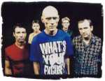
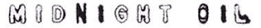

This is a two-sided Australian (and therefore PAL) DVD, that does not seem to be regionally encoded. Experimentation has found it to play best in PC DVD drives, especially in North America where very few "living room units" seem to play the disc.
The DVD is essentially the same as the RSL video, but the with the added section "The Oils Talk" featuring interviews with the band. Listed below is the contents of the disc.
The Clips
1. U.S. Forces 2. Power & the Passion 3. Read About It 4. Best of Both Worlds 5. Pictures 6. The Dead Heart 7. Beds Are Burning 8. Dreamworld 9. Put Down that Weapon 10. Blue Sky Mine 11. Forgotten Years 12. King of the Mountain 13. Bedlam Bridge 14. One Country 15. My Country 16. Outbreak of Love 17. In the Valley 18. Underwater 19. White Skin Black Heart"The Oils Talk"
1. 10,9,8,7,6,5,4,3,2,1 2. Red Sails In the Sunset 3. The 1984 Elections 4. Species Deceases/Clayoquot Sounde 5. The Dead Heart 6. Diesel & Dust 7. Blue Sky Mining 8. Breathe
Side 2
Live, Powderworks, Blackfella/Whitefella
1. Armistice Day 2. No Time for Games 3. Lucky Country 4. Short Memory 5. Read About It 6. Harrisburg 7. Stand In Line 8. Sleep 9. Hercules 10. River Runs Red 11. Sometimes 12. Surfs Up Tonight 13. Sins of Omission 14. Used and Abused 15. Cold Cold Change 16. Blackfella/Whitefella 17. The Dead Heart 18. Beds Are Burning"The Oils Talk"
1. Midnight Oil - The First Album 2. Playing Live 3. The Capitol Theatre 4. Oils on the Water 5. The Exxon Protest